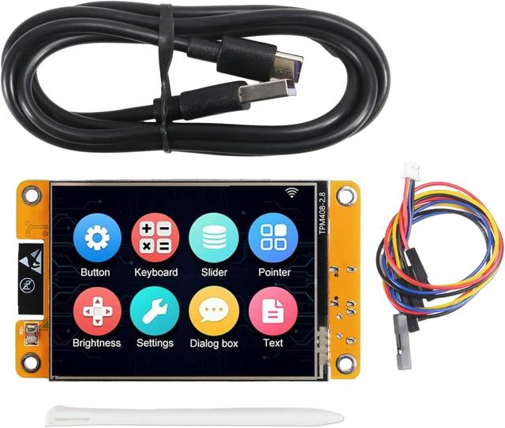
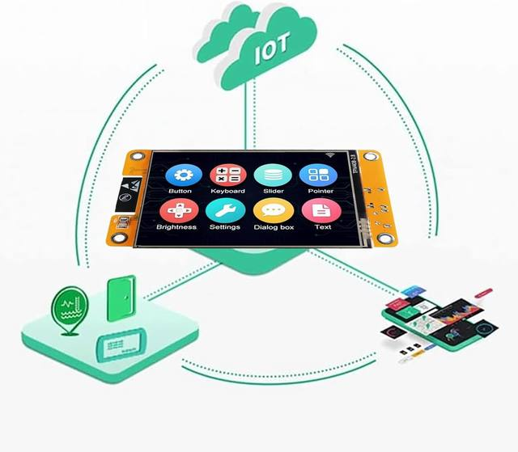
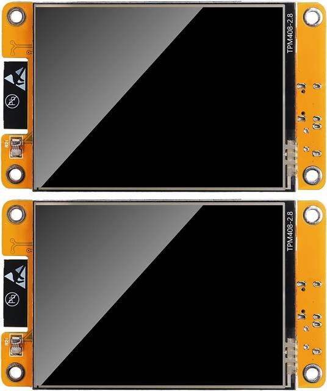
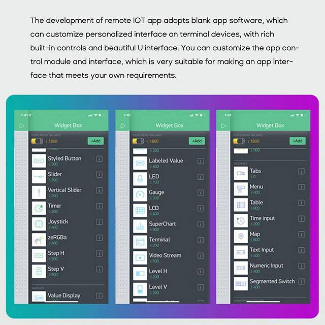
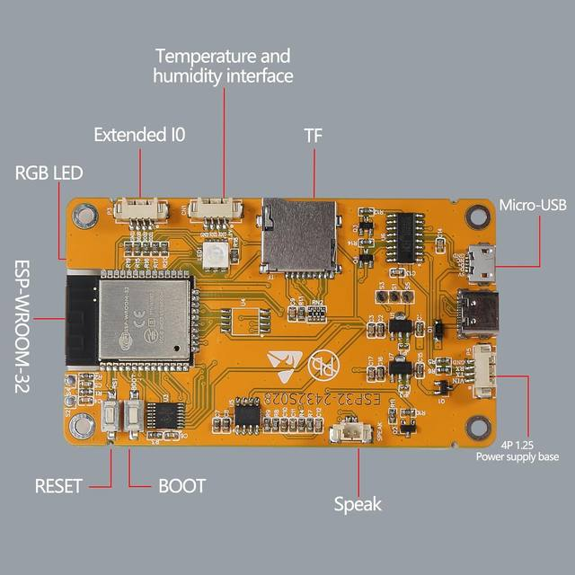
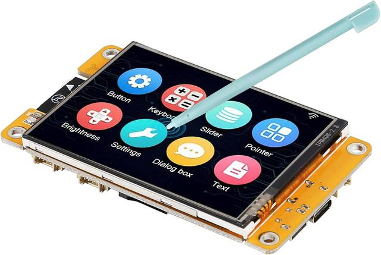
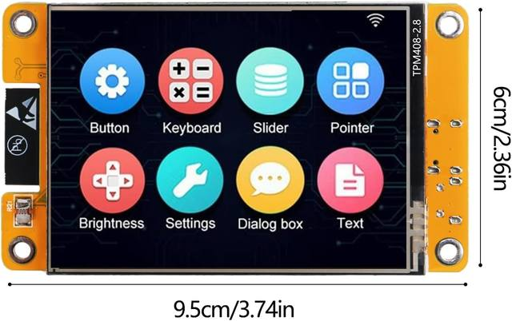

The display screen is controllable and can be used for APP remote control, remote environmental data collection and remote. Data , remote parameter setting and other batch development applications.
ESP32-2432S028 development board is based on the ESP32-DOWDQ6 controller, low-power, dual-core CPU, clock frequency up to 240MHZ, integrates a wealth of resource peripherals, high-speed SDIO,SPI, UART and other functions
Application: Home smart device image transmission, Wireless monitoring, Smart agriculture QR wireless recognition, Wireless positioning system signal, And other IoT applications
ESP32 WIFI&Bluetooth Development Board 2.8 " 240*320 Smart Display Screen 2.8inch LCD TFT Module With Touch WROOM; Support: 1: UART/SPI/I2C/PWM/ADC/DAC and other interfaces 2:OV2640 and OV7670 cameras, built-in flash 3:picture WiFI upload 4:TF card 5:multiple sleep modes 6:Embedded Lwip and FreeRTOS 7:STA/AP/STA+AP working mode 8:Smart Config 9:AirKiss one-click network configuration 10:secondary development
The ESP32-24325028 development board is based on the company's ESP32-D0WDQ6 controller, with dual core CPU and clock frequency up to 240MHz. It integrates peripherals, high-speed SDO, SP, UART and other functions, and supports automatic download.
Specifications
Working voltage 4.75-5.25V
SPIFlash default 32Mbit
RAM internal 520KB
Wi-Fi 802.11b/g/n/e/i
Bluetooth Bluetooth 4.2BR/EDR and BLE standard
Support interface (2Mbps) UART, SPI, I2C, PWM
Support TF card, maximum support 4G
IO port 9
Serial port rate default 115200bps
Spectrum range 2400 ~2483.5MHz
Antenna form Onboard PCB antenna, gain 2dBi
Image output format: JPEG (only OV2640 support), BMP, GRAYSCALE
Packaging method DIP-16
Transmit power 802.11b: 17±2dBm (@11Mbps)
802.11g: 14±2dBm (@54Mbps)
802.11n: 13±2dBm (@MCS7)
Receiving sensitivity CCK, 1Mbps: -90dBm
CCK, 11Mbps: -85dBm
6Mbps(1/2BPSK): -88dBm
54Mbps (3/464-QAM): -70dBm
MCS7 (65Mbps, 72.2Mbps): -67dBm
Power consumption Turn off the flash: 180mA@5V
Turn on the flash and adjust the brightness to the maximum: 310mA@5V
Deep-sleep: The lowest power consumption can reach 6mA@5V
Moderm-sleep: the lowest can reach 20mA@5V
Light-sleep: the lowest can reach 6.7mA@5V
Security WPA/WPA2/WPA2-Enterprise/WPS
Working temperature -20 ℃~ 70 ℃
Storage environment -40 ℃~ 125 ℃, <90%RH
Features：
Use low-power dual-core 32-bit CPU, which can be used as an application processor.
The main frequency is up to 240MHz, and the computing power is up to 600 DMIPS
Built-in 520 KB SRAM
Support UART/SPI/I2C/PWM/ADC/DAC and other interfaces
Support OV2640 and OV7670 cameras, built-in flash
Support picture WiFI upload
Support TF card
Support multiple sleep modes.
Embedded Lwip and FreeRTOS
Support STA/AP/STA+AP working mode
Support Smart Config/AirKiss one-click network configuration
Support secondary development






